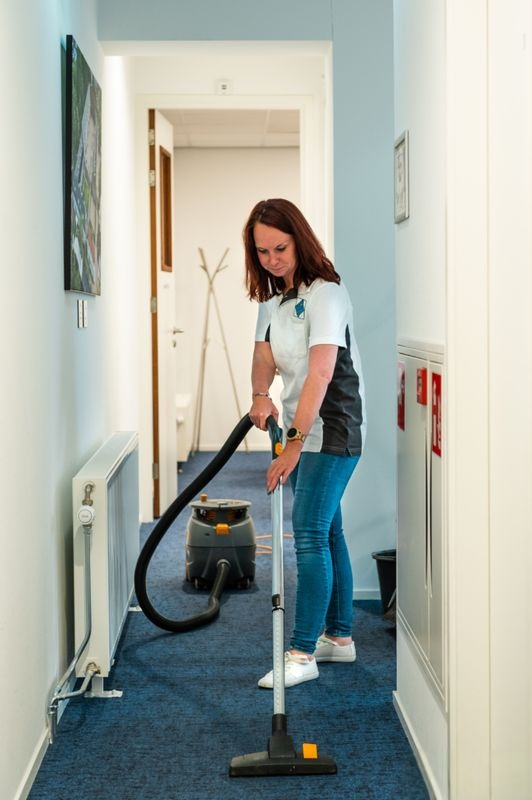

Services de ménage et nettoyage professionnels
Devis gratuit et interventions rapides à Lyon, Arles, Marseille, Saintes-Maries-de-la-Mer, Saint-Rémy-de-Provence, Nîmes, Saint-Laurent-d'Agny, Givors et alentours

MME Propre propose des services de ménage et nettoyage pour particuliers et professionnels à Lyon, Villeurbanne, Saint-Priest, Vénissieux, Arles, Marseille, Aix-en-Provence, Martigues, Istres, Salon-de-Provence, Saintes-Maries-de-la-Mer, Saint-Rémy-de-Provence, Nîmes, Saint-Laurent-d'Agny, Givors, Taluyers, Chassagny, Mornant, Rive-de-Gier, Brignais, Vourles, Saint-Genis-Laval et dans toute la région Auvergne-Rhône-Alpes, Provence-Alpes-Côte d'Azur et Occitanie.
Vous cherchez une femme de ménage fiable pour votre maison ou appartement ? Besoin d’un nettoyage professionnel pour vos bureaux ou locaux commerciaux ? Vous gérez un camping et avez besoin d’un service de nettoyage après la saison ? MME Propre est la solution qu’il vous faut !
Basée à Lyon, notre entreprise de nettoyage intervient rapidement pour offrir des services sur mesure, que vous soyez à Lyon, Arles, Marseille, Saintes-Maries-de-la-Mer, Saint-Rémy-de-Provence, Nîmes, Saint-Laurent-d'Agny, Givors, Taluyers, Chassagny, Mornant, Rive-de-Gier, Brignais, Vourles, Saint-Genis-Laval ou dans leurs environs. Nous nettoyons vos maisons, appartements, bureaux, locaux professionnels, et campings avec des produits écologiques et des équipements professionnels. Nos équipes, formées et expérimentées, garantissent un résultat impeccable, que ce soit pour un ménage régulier, un grand nettoyage après travaux, ou un nettoyage de fin de saison pour campings.
Votre partenaire de confiance, disponible 7 jours sur 7, intervient dans toute la région pour des services de ménage et nettoyage. Que vous soyez un particulier, une entreprise, ou un gestionnaire de camping, nous offrons des prestations adaptées à vos besoins avec un devis gratuit et une intervention rapide.
Nos services de nettoyage
MME Propre propose une gamme complète de services de ménage et nettoyage pour répondre à vos besoins :
- Ménage à domicile pour maisons et appartements
- Nettoyage de bureaux et locaux professionnels
- Nettoyage de campings et mobil-homes
- Nettoyage après travaux ou déménagement
- Entretien régulier ou ponctuel
- Nettoyage de vitres et surfaces spécifiques
- Utilisation de produits écologiques
Nos experts en ménage interviennent à Lyon, Villeurbanne, Saint-Priest, Vénissieux, Arles, Marseille, Aix-en-Provence, Martigues, Istres, Salon-de-Provence, Saintes-Maries-de-la-Mer, Saint-Rémy-de-Provence, Nîmes, Saint-Laurent-d'Agny, Givors, Taluyers, Chassagny, Mornant, Rive-de-Gier, Brignais, Vourles, Saint-Genis-Laval, et dans leurs alentours. Nous proposons des solutions adaptées à chaque client, avec des horaires flexibles et des tarifs compétitifs. Que vous ayez besoin d’un ménage régulier à domicile, d’un nettoyage approfondi de vos bureaux, ou d’un service spécialisé pour votre camping, MME Propre est là pour vous offrir un environnement propre et accueillant.

Pour vos besoins en ménage ou nettoyage, contactez MME Propre dès maintenant. Découvrez des conseils pour un nettoyage écologique et durable avec l’Agence de la transition écologique (ADEME).
Avec MME Propre, profitez d’un service de ménage et nettoyage fiable et rapide à Lyon, Arles, Marseille, Saintes-Maries-de-la-Mer, Saint-Rémy-de-Provence, Nîmes, Saint-Laurent-d'Agny, Givors, Taluyers, Chassagny, Mornant, Rive-de-Gier, Brignais, Vourles, Saint-Genis-Laval et leurs environs. Que vous soyez à Villeurbanne, Saint-Priest, Vénissieux, Aix-en-Provence, Martigues, Istres, ou Salon-de-Provence, nous intervenons pour nettoyer vos maisons, appartements, bureaux, locaux professionnels, et campings avec un devis gratuit et des résultats impeccables. Contactez-nous pour un espace propre et sain !